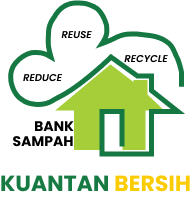

<ion-content class="ion-padding">
  <div class="flex">
    <ion-card class="card-on">
      
      <ion-card-content class="tujuan">
        "Mereduksi (mengurangi) Timbunan Sampah di Tingkat Masyarakat. Dan
        Mewujudkan Kota Tanjungpinang yang Bersih, Indah, dan Lestari"
      </ion-card-content>
      <button class="lewati">
        <a href="../home/home.page.html"> Lewati </a>
      </button>
    </ion-card>
  </div>
</ion-content>
